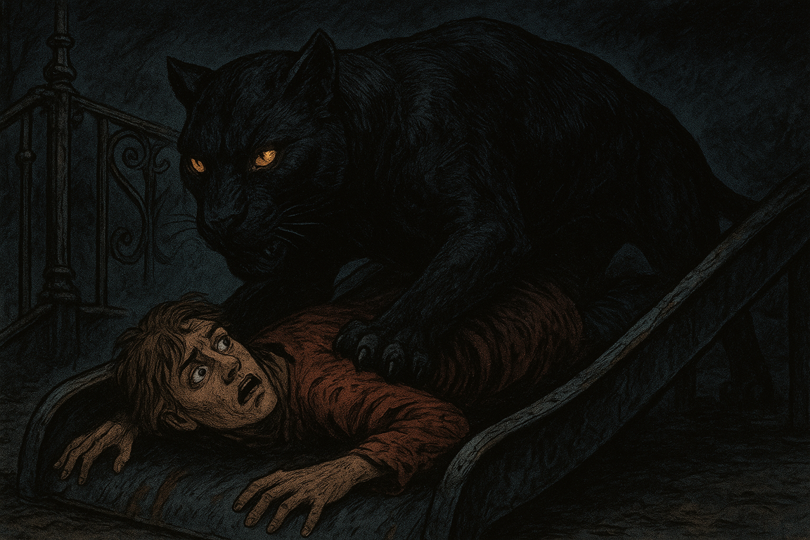

Металлическая горка, холодная, как лезвие скальпеля, впивалась в бок острым ребром. Её поверхность, покрытая облупившейся синей краской и проступавшая ржавыми подтёками, скрипела под моим весом, отдаваясь гулким эхом в пустоте двора. Сварные швы, грубые и неровные, цеплялись за одежду; ржавые болты на боках горки, казалось, вот-вот выскочат из креплений.
Ночная пантера
История о встрече с неведомым
Холод металла
Появление пантеры
Тусклый свет фонарей, мигающих на грани угасания, отражался в потёртых металлических боках, выхватывая из тьмы выцарапанные ножом граффити — имена, даты, кривые сердца. Я лежал на правом боку, прижатый к ледяной стали, а на мне, всей своей дикой мощью, возлежала она — чёрная пантера.
Её тело, словно выточенное из обсидиана, лоснилось в полумраке; мускулы перекатывались под шкурой, как волны под бархатом ночи. Глаза — два раскалённых угля — горели немигающим взглядом, пронзая до костей, будто в них таилась вся бездна джунглей. Длинный, как хлыст, хвост лениво извивался, задевая край горки, а когти, чуть выдвинутые из мягких подушечек лап, царапали металл с тихим скрежетом, словно пробуя его на вкус. Она была воплощением мощи и угрозы: каждый изгиб её тела, каждый лёгкий поворот головы источал грацию, от которой кровь стыла в жилах, а сердце замирало в восторге.

Странная близость
Её бок, горячий, почти обжигающий, прижимался к моей спине, и это тепло, смешанное с первобытной жутью, обволакивало, как лихорадочный сон. Урчание её груди, низкое, как гул далёкого поезда, отдавалось в моих рёбрах, вибрировало в костях, словно подземный ток. Это было пугающе и странно приятно — будто я касался запретного, живого, дикого, чего-то, что могло разорвать меня в один миг, но вместо этого грело кожу.
Лапы, тяжёлые, как мешки с тёплым песком, обвили меня, придавили крепче к холодному металлу. Я дёрнулся, инстинктивно пытаясь выскользнуть, но мышцы пантеры напряглись, словно стальные канаты, выдавливая воздух из лёгких. Дыхание стало рваным, свистящим, как ветер в щелях старого дома. Я закричал — голос сорвался в хрип, растворившись в сыром ночном воздухе.

Куклачёв
В пятидесяти метрах, у края песочницы, стоял Куклачёв. Песочница, обшарпанный деревянный короб с потрескавшимися бортиками, была засыпана серым песком, пропитанным сыростью и усыпанным окурками, фантиками, осколками зелёного стекла. Куклачёв, невысокий, с круглым, почти комичным лицом, похожим на картофелину, казался вырезанным из картона старой фотографии.
Его стеклянные глаза, пустые и неподвижные, не выражали ничего — ни страха, ни интереса, ни жизни. Лицо, лишённое эмоций, словно маска, оставалось неизменным, даже когда он оживлённо жестикулировал, что-то объясняя группе людей в одинаковых серых спецовках, чьи лица терялись в тени. Его силуэт, подсвеченный тусклым фонарём, казался плоским и ненастоящим, будто он был не человеком, а декорацией этого странного сна.
Третий мужчина
Рядом с Куклачёвым, словно его тень, маячила третья фигура — мужчина, чьё лицо я не мог разобрать. Среднего роста, с узким, жилистым телосложением, он был типичным представителем советских мужчин конца 70-х. Тёмные брюки-клёш, слегка потёртые на коленях, и короткая кожаная куртка, плотно облегающая худощавую фигуру, пахли старым табаком и резким одеколоном «Шипр».
Лицо его оставалось размытым, как выцветшая фотография, но его присутствие было неотступным, будто он был частью Куклачёва, его молчаливым спутником. Он не говорил, не смотрел на меня, но я чувствовал его взгляд — холодный, оценивающий, будто он вёл протокол происходящего, зная заранее каждый его исход.
Смертельное касание
Пантера повернула голову. Горячее, влажное дыхание, пахнущее сырой землёй и кровью, обожгло шею. Шершавый язык, грубый, как наждачная бумага, лизнул висок, и я замер, парализованный этим странным, почти ласковым ужасом. Потом я ощутил холодок и остроту.
Один из её клыков, длинный, как кинжал, упёрся в основание черепа. Она не давила — лишь касалась, но в этом касании была вся хрупкость моей жизни. Одно движение, один её чих — и этот клык войдёт в меня, как раскалённый нож в масло. Воздух вокруг стал густым, пропитанным запахом её шерсти — смесью мускуса, металла и чего-то древнего, дожунглевого.
Безразличие Куклачёва
Я замолчал. Смотрел на Куклачёва и его безликого спутника. Куклачёв не обернулся. Не издал ни звука. Даже когда я позже, в приступе ярости, бил его и душил, его круглое лицо оставалось каменным, словно высеченным из гранита. Он был уверен — уверен, что её клык был его лучшей и единственной страховкой.
Третий мужчина, стоявший чуть поодаль, смотрел молча, его размытое лицо не выражало ничего, но я чувствовал его присутствие, как постоянный сквозняк на затылке.
Спуск с горки
Потом мы скатились вместе. Металл горки завизжал под нами, как раненый зверь; её когти царапнули поверхность, высекая искры, которые гасли в холодном воздухе. Я чувствовал её тепло, её вес, её дыхание, пока мы неслись вниз, в пропасть скорости.
Её шкура скользила по моей коже, горячая, почти живая сама по себе, а урчание в её груди смешивалось с визгом металла. Это было пугающе и завораживающе — смесь ужаса и дикой свободы, будто я падал в объятиях самой смерти, но её дыхание сулило жизнь.
На поводке
Позже я вёл её на поводке. Она шла рядом, переступая лапами-тарелками, каждая из которых оставляла в пыли асфальта отпечаток, глубокий, как следы в мокрой глине. Её мощная шея покачивалась на уровне моего бедра, шкура переливалась, как нефть под палящим солнцем, а глаза, полуприкрытые, следили за миром с ленивой, но безжалостной угрозой.
Мы шли по улице, и мир расступался перед нами. Дети замолкали, их ладошки цеплялись за подолы матерей, глаза расширялись от страха. У скамейки, где сидела молодая мать, прижимавшая к груди младeнца в голубом комбинезоне, пантера внезапно дёрнулась, издав низкий рык. Мать вскрикнула, её лицо исказилось ужасом, и она, споткнувшись, рухнула на асфальт, прижимая ребёнка к себе.
Младенец заплакал, его тонкий крик резанул воздух, а пантера лишь лениво повела головой, будто наслаждаясь хаосом. Мужик с пивом у ларька застыл, банка в его руке повисла в воздухе, пена стекала по пальцам. Женщина резко одёрнула дворнягу, и та, поджав хвост и скуля, забилась под скамейку.
Я ловил эти взгляды — смесь испуга, благоговения и дикого ужаса. И внутри что-то пело, как натянутая струна. Я был тем, кто держит на поводке саму тень, того, кого боятся все. Где-то неподалёку, в тени панелек, мелькал силуэт того мужчины в кожаной куртке, его шаги хрустели по гравию, отстукивая такт этому шествию, но он оставался на периферии, как призрак, который не хочет быть замеченным.
Потеря контроля
А потом поводок натянулся — резко, жестоко, как рывок цепи. Она встала на задние лапы, выросла, как чёрная геральдическая фигура на фоне серых панелек, её когти-кинжалы повисли в воздухе, поблескивая в свете уличных фонарей.
Она рванулась к салону с цветами, где за стеклом замерла девушка с телефоном, её лицо побелело, пальцы застыли на экране. Я упёрся ногами в асфальт, кожаные ремни поводка впились в ладонь до хруста костей. Меня потащило, как тряпичную куклу, по тротуару, усыпанному жёлтыми листьями и окурками.
Она не слушалась больше. Она везде лезла, обнюхивала всё, рвалась ко всему, что шевелилось — к голубям, к кошке, что метнулась под машину, к запаху шавермы, пропитанному специями, доносившемуся из ларька. Её сила была абсолютной, первозданной, и моя иллюзия контроля порвалась, как тот поводок, который трещал последним предупреждением.
Я был просто грузиком на конце её воли. Ярлыком с надписью «Корм». А где-то за моей спиной, в тени, шаги того мужчины в клёшах затихли, но я знал — он всё ещё там, наблюдает, молчит, ждёт.